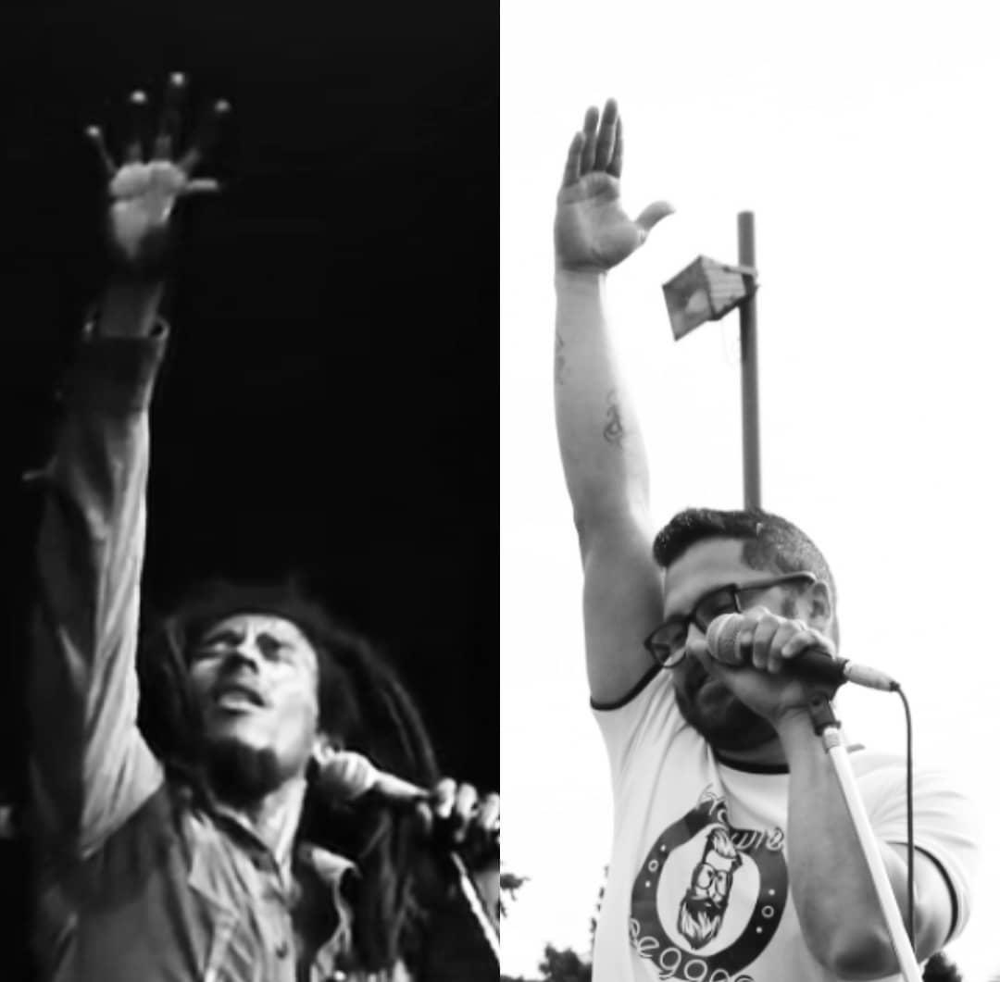
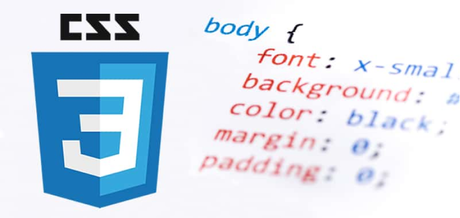

Este es un espacio dedicado a mi carrera musical, ya que como proceso de transición de mi momento como cantante a la programación y desarrollo web, quiero homenajear a ese paso de mi vida que se llamó "Música".
Nace un jueves 29 de agosto del año 1985 en la ciudad de Cabimas, Estado Zulia en Venezuela. Hijo de Samuel Antonio Reyes (Padre) e Isidra Morales (Madre); Ambos Venezolanos, oriundos del Estado Zulia. Crece en una familia de clase media, siendo el menos de 4 hermanos, en cronología están:
Crece en Santa Rita, una ciudad llena de música, entre las Cumbias (Guarachas) y Gaitas se forma como cantante entrando a la edad de 9 años en una agrupación llamada "Son de la Rita" interpretando canciones de Argenis Carrullo junto a Ruben Rodriguez "Bajista" y Albenis Blanco (Cantante) quienes luego pasarían a ser integrantes de "Cuarto Estilo" Agrupación de música tropical bailable creada por Howie unos 10 años después, con la que viajaron al rededor de Venezuela junto a Jesús Echeto como patrocinante y manager de la banda. La lista de artistas estaba compuesta por:
Estudiando en la Universidad Católica Cecilio Acosta en la ciudad de Maracaibo Venezuela donde conoce a Henrry Mora cantante Zuliano de Reggae, quien le hace descubrir este mundo de cuatro acordes donde todo es posible, entrando desde el Gran Bob Marley hasta pasar a nutrirse con bandas nacionales e internacionales de habla hispana como Los Cafres y Dread Mar I, decidiendo así comenzar a cantar este genero que lo llevaría a crear su primera banda llama Zapara Reggae Band. .
Howie no se considera Rastafari; dice que seria un titulo que le quedaría grande, porque piensa que si el mundo entero pensara como un Rastaman, el mundo seria un lugar sin fronteras, ni guerras y lleno de amor. Es por eso que el se identifica como fiel amante de esa cultura como espectador, amando cada detalle de la cultura. No es afectivo a las religiones, piensa que son una dogma para monopolizar la integridad y conciencia del ser humano y negarle la posibilidad en muchos casos a ser lo que en verdad sueñan.
Por ahora soy amante de la cultura y musica Reggae en general, y que dejo a un lado la banda y sus canciones para comenzar mi carrera de programacion, ya que lo veo como mi ultimo escalon de vida, me gustaria ser un buen developer, me gusta la idea de trabajar en una linda oficina o trabajar desde casa, es por eso que esta pagina fue creada por mi, en html y ccs, en mi Visual Studio Code y en mi habitacion particular, con Eli Carrasquero como mentor.
Primer reggae escrito en el año 2002, .
Nuestro Amor es un tema escrito en 2003, luego es reafirmado cerca de 2018 por el tema de lasdiversidad de genero y pensamientos en post y contra de aborto. Grabado en Vaca Lechera Record de Carlos Morante
Este tema fue una historia de mi amiga Fernanda Barboza (Escritora y Artista) donde la converti en musica y agregue tildes a la escena para darle forma y amplitud. Tema del 2004 grabado en One Record Produccion Venezuela, bajo la tutela de Ruben Rodriguez.
Segunda Oportunidad es un tema del 2010 que aun no se ha grabado ni en video pero espero que pronto se pueda..
Esta cancion es una dedicacion a mi esposa Diolis, aun no se ha grabado pero espero este año poder hacerlo.
Tema del año 2015 el cual me ayudo a presentarme a nivel internacional, llegando hasta la ciudad de Chile, espeficicamente en Ñuñoa. En esta opotunidad fue grabado en Buenas Vibraciones Record Buenos Aires y el video fue un aporte de varios de los seguidores y con apariciones de artistas reconocidos del medio como Henrry Mora, El Moreno Michael y Mulato.
Esta cancion del 2019 con su video dedicado a los problemas en las fronteras para con los Venezolanos. Este video fue publicado por el reconocido periodista Sergio Novelli.
No me enamoras es un tema protesta contra las estafas piramidales que se dieron con el paso de la pandemia del 2020. Muchas personas se sintieron identificadas con este video ya que de alguna forma sintieron estar vinculados de buena o mala manera para esta gente que se encarga de quitar una suma de dinero para ofrecerte un plan de trabajo.
Una de las primeras entrevistas con los primeros integrantes de lo que en ese entonces era Zapara Reggae Bandas
Entrevista del 2014 en el Programa Divertidisimo en TVCOL, Para ver la entrevista debes adelantar al minuto 32:00
Entrevista En Generacion Like Buenos Aires Argentina 2020
Si quieres contratar a Howie escribenos a howiereggae@gmail.com